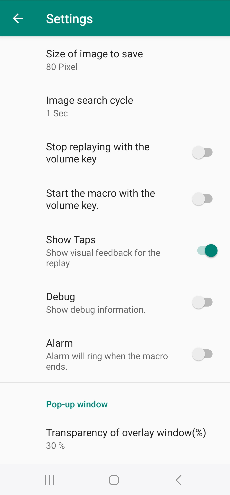
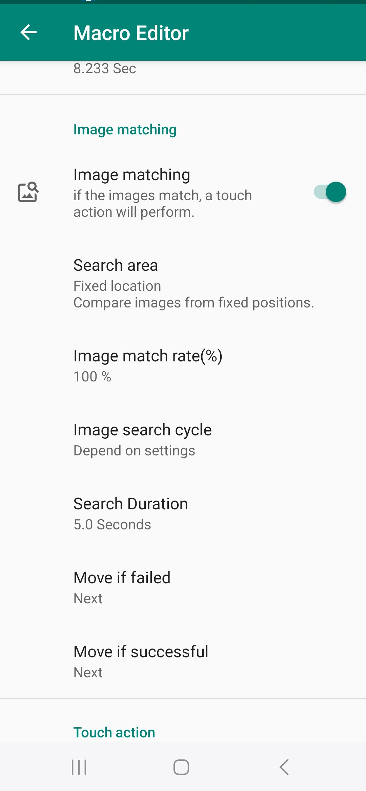

이미지 검색 주기
이미지 검색을 얼마나 자주 할지를 설정합니다. 검색 주기가 1초라면 2초에 이미지 검색을 2번 수행합니다.

이미지 검색 시간
얼마나 오래동안 이미지를 찾을지 설정합니다. 검색 시간을 2초로 설정하면 2초 동안 이미지를 찾고 일치하는 이미지가 없을 경우 실패로 처리합니다.

이미지 검색 주기와 검색 시간
이미지 검색 주기의 설정 값에 따라 이미지 검색 시간동안 이미지 검색을 몇 번 수행할지 결정됩니다. 이미지 검색 주기가 1초이고 검색 시간이 4초이면 4번 이미지 검색을 수행합니다. 이미지 검색 주기가 2초이고 검색 시간이 4초이면 2번 이미지 검색을 수행합니다.